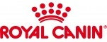
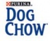

FourPaws.ua - Интернет-магазин для домашних питомцев
Каталог товаров:
Питание:
Сухие корма
Влажные корма
Добавки
Средства по уходу:
Шерсть
Зубы
Лапы
Аксессуары, игрушки и прочее:
Поводки и ошейники
Клетки
Украшения
Игрушки
Другое
Все бренды и производители:
- Royal Canin - лидер на рынке производства рационов для собак и кошек, благодаря каждодневной исследовательской работе находится в авангарде разработок в области питания для домашних животных.
- Purina DentaLife Чтобы Ваша собака оставалась здоровой, ей нужен особый уход. Поддержание здоровья полости рта благоприятно сказывается на здоровье питомца.
- Dog Chow Прогулка по влажному лесу, бег по лужам, гонки за фрисби – каждый день дарит вашей собаке новые приключения!
- Канадский корм Now Fresh изготовлен только из свежего бескостного мяса, с добавлением овощей и фруктов, без использования гормонов и субпродуктов.
100% беззерновой корм со сбалансированным содержанием белков и жиров.
Наши советы:
- Как понять, какого питомца лучше завести
- кошки, собаки, птицы или экзотика?
- выбор пола
- Как подготовить новое жилище для вашего друга
- Как правильно подобрать корм
- Что нужно знать о здоровье домашнего животного